服装
Paper朱 p04 VRoid 衣服+身体
窗口是 VRoid Studio 1.5.0，工程名 Xiduochuan.vroid，软件界面是英文。参考图是喜多川海梦的校服。衣服白模很少，所以选一件能收腰的毛衣背心，在贴图里改成白衬衫、领带和口袋；格子裙和鞋用预设。体型只动身高、脖子和肩，再把描边拉到接近参考。下面的数字都是那一帧能读出来的，滑杆后面还在动。
衣服
对着参考翻上衣
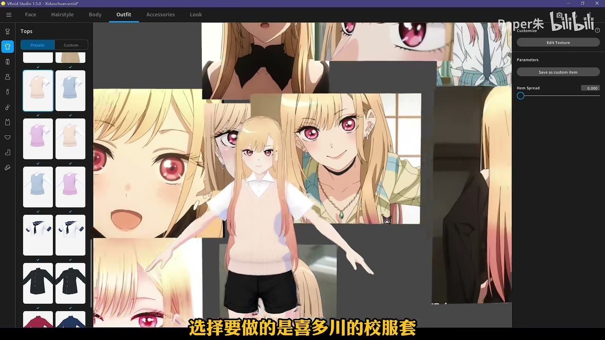
字幕说要做的是喜多川的校服套，这次用最简单的办法。左侧预设从白衬衫、针织背心翻到外套，角色身上这时是浅色毛衣背心加白短袖。右侧只露出 Hem Spread，读数 0.000。先对参考，不在这一屏把模板锁死。
白模少，用毛衣背心收腰
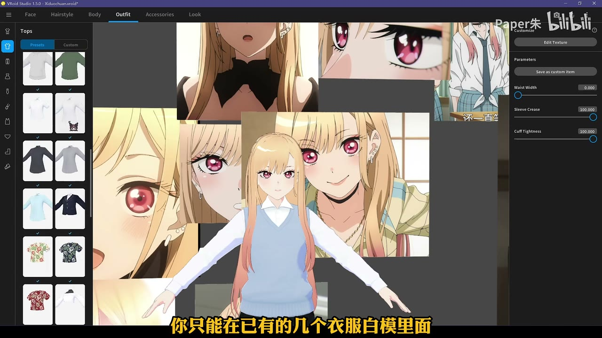
字幕说只能在已有的几个衣服白模里尽量靠近目标。这一帧选中蓝色毛衣背心，外面仍是白衬衫。Waist Width 是 0.000，Sleeve Crease 和 Cuff Tightness 都是 100.000，袖褶和袖口拉到最右，腰线比平衬衫明显。衬衫本身比较平，这件背心才带出校服外套的轮廓。
贴图是一张展开的纸
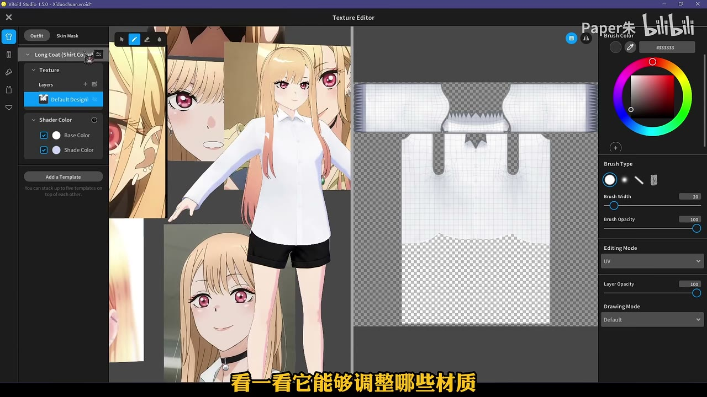
点 Edit Texture，先看这件长外套能改哪些材质。Shader Color 里 Base Color 和 Shade Color 都勾着。右边是领口、袖子和衣身分开的 UV，下半是透明格子，字幕说这就是一张展开的纸。笔色 #333333，笔宽 20，不透明度 100，Editing Mode 是 UV。关掉编辑器会弹出 Close Texture Editor，Items to save 勾着 Tops，可以 Save as new item 或 Overwrite，也可以 Close without saving。中途画面切去 Hairstyle 的 Edit Preset，Fronthair 里重拉丢了的引导线；旁边悬浮窗是宵夜小工具 v0.3.6，用来挂参考图。头发这里不展开。
领饰太短，领带改画上去
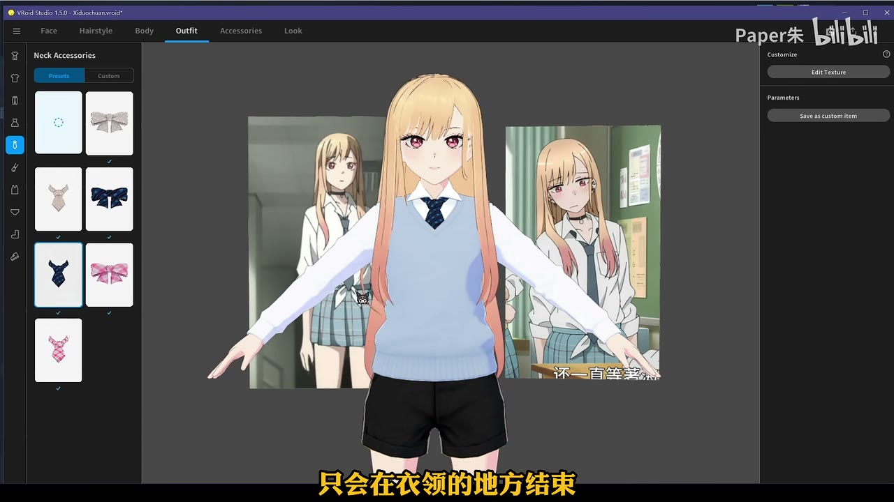
内置领结、领带套上去只到衣领结束，盖不住喜多川那种长领带。字幕说软件受限，所以不套这个预设，后面把领带直接画进衣服贴图。这是基础做法；加更多模板，或把领结拉到外部软件单独做，画面上这一段没有展开。
把毛衣涂成衬衫的白
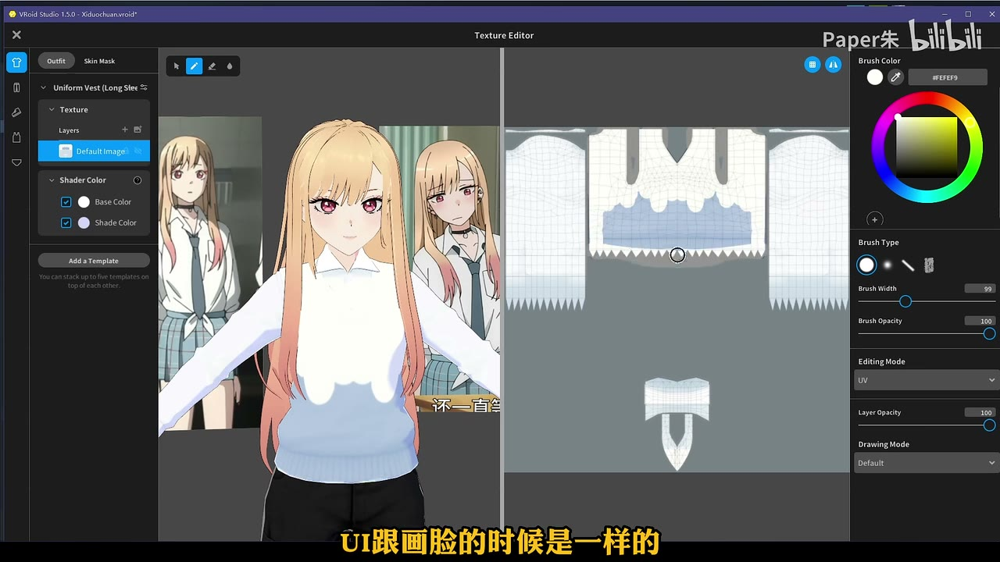
回到长袖毛衣背心的纹理。用接近白的 #FEFEF9 在 UV 上把背心胸腹涂掉，模型上毛衣纹理淡下去，白衬衫露出来。这一帧笔宽 99，不透明度 100，Layer Opacity 100，Editing Mode 是 UV，Base Color 和 Shade Color 都开着。衣身不用一次涂满。字幕说这个 UI 跟画脸的时候是一样的。
领带先打在新图层
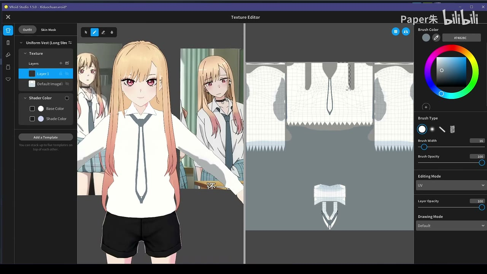
在 Default Image 上面新建 Layer 1 再画。笔色 #74828C，笔宽 16，不透明度 100。UV 领口中间和模型胸口同时出现一条领带，位置先在三维里定下来，线不用很细。这一帧 Base Color 和 Shade Color 没勾。口袋的浅色块也是贴在衬衫上的草稿，还不是最后的线。
贴图拉到 SAI 里描
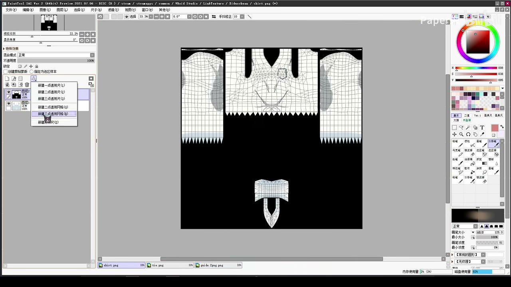
精细的线不在 VRoid 里慢慢描，贴图从链接目录开到 PaintTool SAI Ver.2，界面是中文。正在从尺子菜单新建透视尺，列表里有一点透视、二点透视和透视网格。画布上衣服区域是黑底白网，顺着网格找领口。底部标签还有 tie.png 和 guide.2png。
对称尺对着参考收线
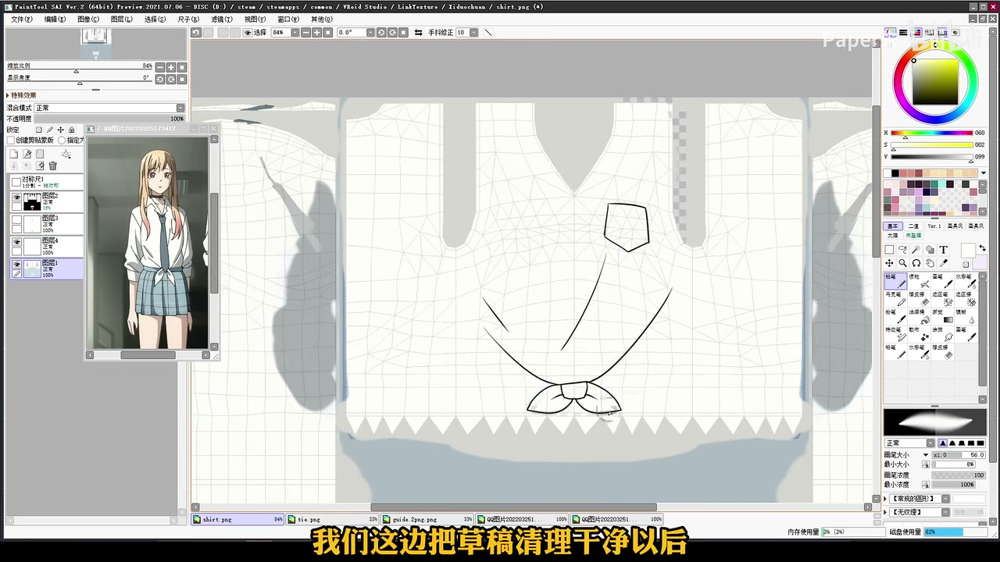
对称尺1开着，参考图是 QQ图片20220325173412.png，就是喜多川全身。线稿收成领口、腰间蝴蝶结和胸口口袋，旁边还留着草稿的灰线。字幕说先把草稿清理干净。衣服下摆再往下会另铺一层颜色，用来看出哪些像素已经超出衣服。
导回来对一下位置
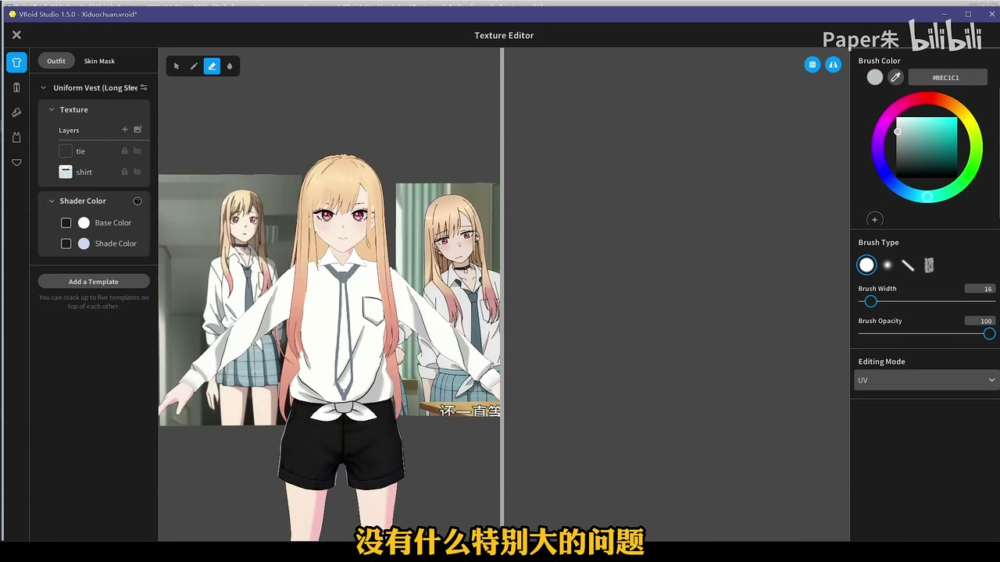
保存后再看模型。图层分成 tie 和 shirt，身上是白衬衫、灰领带、口袋和腰间蝴蝶结，下装还是黑短裤。这一帧右边 UV 是空的，看的是左边的结果。肩线和衣褶还没修完，领带的落点已经能对上后面的参考。
阴影放在单独一层
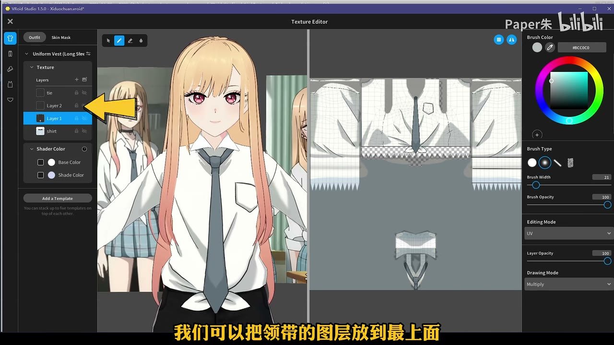
阴影不画在衬衫本体上。Layer 1 的 Drawing Mode 改成 Multiply，笔色 #BCC0C0，笔宽 21，不透明度 100。tie 在图层列表更上面，shirt 在下面。叠乘的灰留在衬衫上，不会把领带盖掉。字幕说可以把领带图层放到最上面，这样阴影涂出去也不会糊到领带上。纯黑的线画面上没有用，阴影是灰的。
格子裙用预设，阴影也单开一层
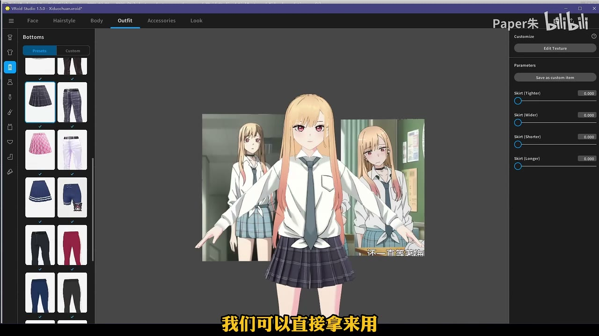
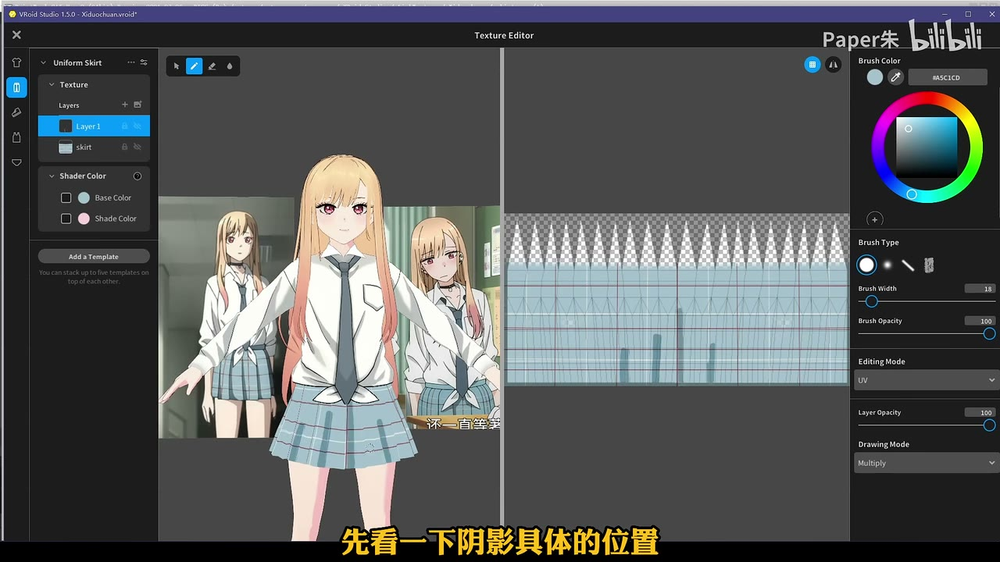
下装不从零画。Bottoms 里直接选蓝灰格裙，Skirt (Tighter)、Skirt (Wider)、Skirt (Shorter)、Skirt (Longer) 这一帧都是 0.000，字幕说可以直接拿来用。接着在 SAI 里打开 skirt.png，弹出色相/饱和度。回到纹理编辑器时裙子已是浅青格，阴影画在 Layer 1，Drawing Mode 是 Multiply，笔色 #A5C1CD，笔宽 18。先看褶子落在 UV 的哪一段，再往上加阴影。
鞋用预设
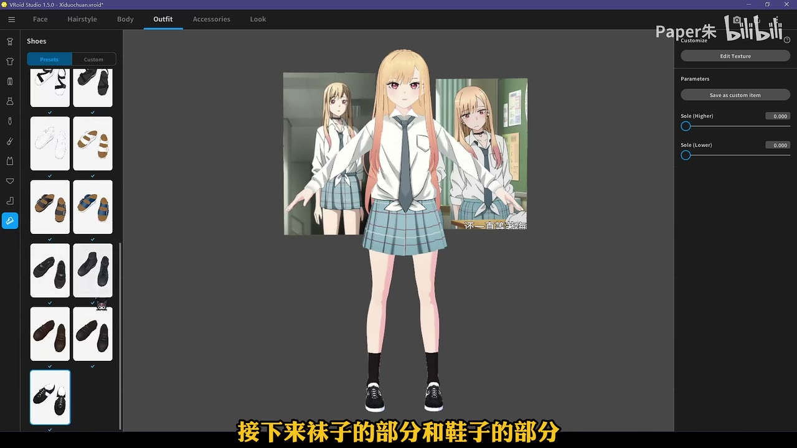
字幕接着要做袜子和鞋子。这一帧停在鞋子预设，选中的是一双黑运动鞋，腿上已经穿着黑中筒袜，没有再进袜子的纹理。Sole (Higher) 和 Sole (Lower) 都是 0.000。
体型
身高往女体一侧拉
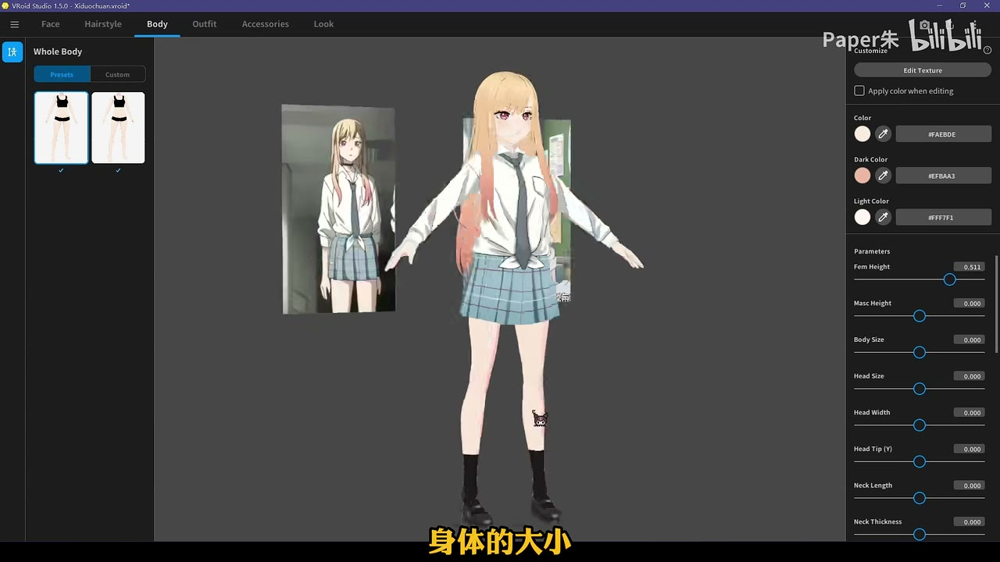
衣服套上之后才进身体。两个全身预设都勾着。肤色这一帧是 Color #FAEBDE、Dark Color #EFBAA3、Light Color #FFF7F1，Apply color when editing 没勾。Fem Height 拉到 0.511，人变高；Masc Height、Body Size、Head Size、Head Width、Head Tip (Y)、Neck Length、Neck Thickness 都还是 0.000。字幕说这里调的是身体的大小。
脖子加长，肩膀收窄
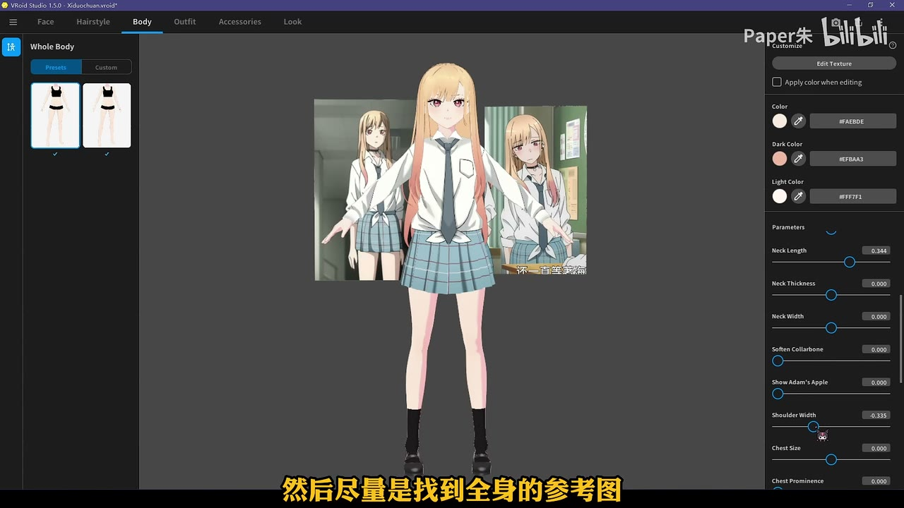
按全身参考往下改。这一帧 Neck Length 是 0.344，光标停在 Shoulder Width，读数 -0.335，肩比默认窄一圈。Neck Thickness、Neck Width、Soften Collarbone、Show Adam's Apple、Chest Size、Chest Prominence 都是 0.000。脖子和肩后面几秒还在动，这两格不是锁死的最终值。字幕说要按人物本身，并找出全身参考。
身体的渲染阴影先关掉
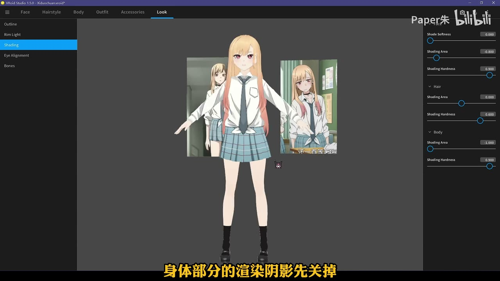
顶部改到 Look。Body 的 Shading Area 拉到最左，读数 -1.000，Shading Hardness 是 0.900。字幕说身体部分的渲染阴影先关掉，衣服上的阴影就只剩贴图那一层。同一屏脸的 Shading Area 是 -0.800、Shading Hardness 0.900，头发 Shading Area 0.000、Shading Hardness 0.600，最上面的 Shade Softness 是 0.000。
领口阴影画回皮肤
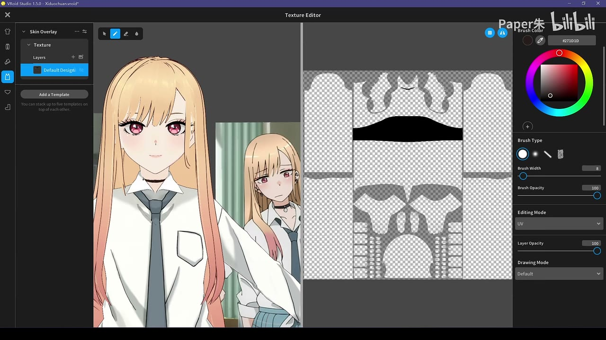
体型看过之后回到皮肤。Skin Overlay 的 Default Design 上，脖子对应一条黑带，就是衣领底下的阴影。笔色 #271D1D，笔宽 8，不透明度 100，Editing Mode 是 UV。先把领口边缘的位置定在皮肤上，再往旁边修，不在衬衫图层里硬凑这条线。
描边跟参考对齐
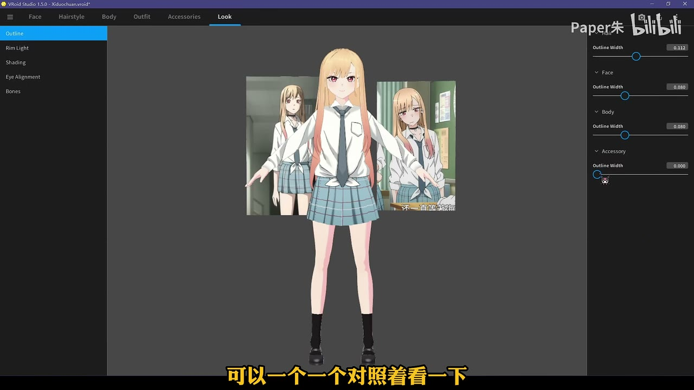
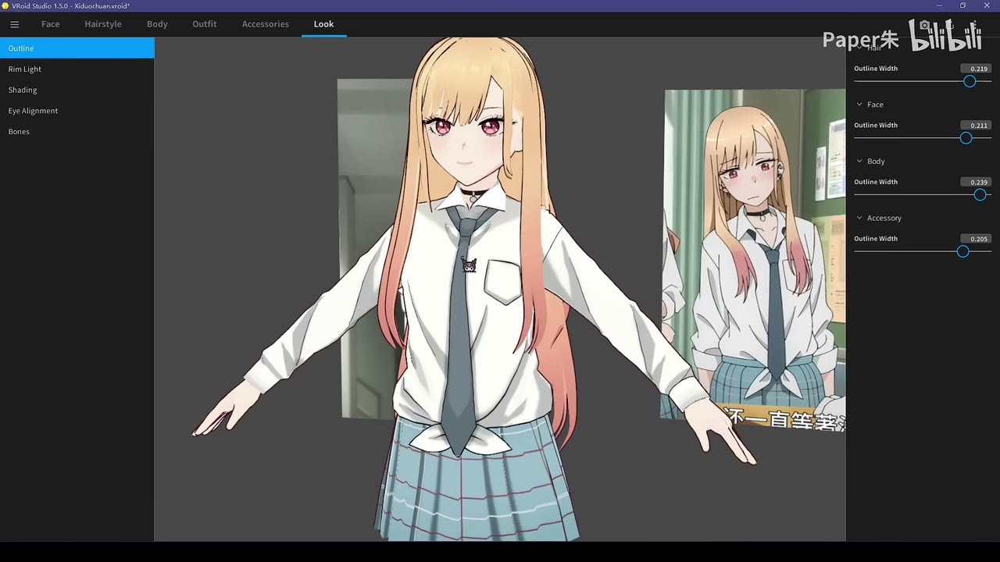
描边不跟衣服贴图混在一起，在 Look → Outline 里分头发、脸、身体、配饰。刚打开时头发 Outline Width 是 0.112，脸 0.080，身体 0.080，配饰 0.000，光标在配饰上。拉近对照参考之后四项都往右：头发 0.219，脸 0.211，身体 0.239，配饰 0.205。身体略粗于脸，黑边和喜多川那张图更接近。结尾又打开 Mouth 的纹理，笔色 #000000、笔宽 6，画布上只有一小段横线；字幕要的是把嘴线稍微加粗。